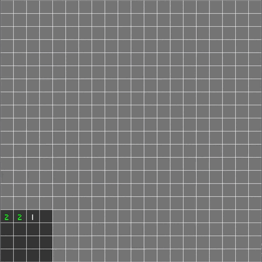
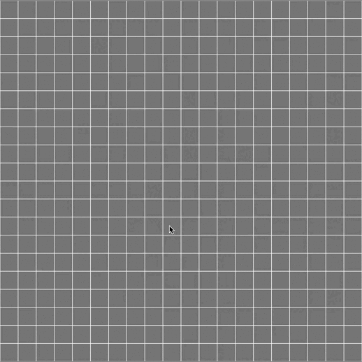

Introduction
Hello, in this tutorial we will introduce game development in Rust using Bevy, a free and open source data-driven game engine.
The final result of this course is a cross-platform minesweeper you can test in this live version:

Disclaimer
The tutorial focuses on the following goals:
- Breakdown basic Bevy features and the ECS making a minesweeper
- Using development tools such as the inspector gui, the logger, etc.
- Developing a generic bevy plugin making good use of the state system and resources
- Having Web Assembly support
The programming choices are not the most efficient but allow to fulfill the goals. For example, you may notice that the uncovering system has a 3 to 4 frames delay:
- frame 1: click event read and tile trigger event send
- frame 2: tile trigger event read and Uncover component insert
- frame 3: Actual uncovering
There are better ways to do this but this way you learn to receive and send events, place components in order for a system to query it, etc.
A decent understanding of the Rust language is a prerequisite.
Note that this is my first Bevy project, there may be improvements so trust the latest version of the code.
Technologies
Why an ECS?
I have experience in game development using Unity3D component system using C#. It is very user-friendly, but I think Object-oriented programming is getting obsolete, and I wanted to try an Entity component system.
Unity made an ECS, why not use it?
Unity is taking the leap towards ECS, but looking at the documentation I found it very complex and honestly, bad. Maybe they were forced to compromise with the existing core but it doesn't stand the comparison with Bevy's ECS.
Why Rust?
I love the rust language, I love game dev, I wanted to try the combination. Also, since I wanted to experiment with an ECS which is the incarnation of the Compound VS Inheritance pattern in game dev, using Rust is very natural.
Furthermore, I find garbage collection to be a critical issue in game dev and Rust completely wipes it away.
Resources
We will be using the 0.6 version of the Bevy engine:
Some resources I used that you should check out:
- The bevy cheat book
- The bevy examples
- The bevy discord where the community is very active and helpful
The assets I used are not mine, they are all free for personal use, please check the credits.
I suggest you follow the tutorial using a modern IDE, like Jetbrains CLion or VS Code with the Rust plugin.
ECS
So what's an Entity component system?
The Unity documentation has a nice graphic explanation of ECS:

It's a data-oriented coding paradigm using the following elements:
- Entities: representing an object via a simple identifier (usually a classic integer)
- Components: structures that can be attached to entities, containing data but no logic
- Systems: functions using Component queries to apply logic
The point is to apply identical logic to all Health components instead of applying logic to a complete object. It is more modular and makes it easier to manage in threads.
The final element would be Resources which are data shared across systems.
Author: Félix de Maneville Follow me on Twitter
Set Up
One of the purposes of this tutorial is to create a generic plugin that can be embedded in any app. To do this we will initialize two nested cargo projects.
Cargo setup
The main binary app:
cargo init --bin . --name minesweeper-tutorial
And the board plugin:
cargo init --lib board_plugin
Your directory should look like this:
├── Cargo.toml
├── board_plugin
│ ├── Cargo.toml
│ └── src
│ └── lib.rs
└── src
└── main.rs
Board plugin config
Cargo.toml
Add the following elements to the board_plugin/Cargo.toml file:
[features]
default = []
debug = ["colored", "bevy-inspector-egui"]
[dependencies]
# Engine
bevy = "0.6"
# Serialization
serde = "1.0"
# Random
rand = "0.8"
# Console Debug
colored = { version = "2.0", optional = true }
# Hierarchy inspector debug
bevy-inspector-egui = { version = "0.8", optional = true }
- bevy is the main engine dependency
- colored will be used to print the board in the console in debug mode
- bevy-inspector-egui so we can get the inspector compatibility for our components.
Inspector GUI at the end of the tutorial:

We activate the debug crates through a debug feature gate.
lib.rs
Remove the generated code and create the plugin struct
#![allow(unused)] fn main() { // board_plugin/src/lib.rs pub struct BoardPlugin; }
App config
Cargo.toml
Add the following elements to the main src/Cargo.toml file:
[features]
default = []
debug = ["board_plugin/debug", "bevy-inspector-egui"]
[dependencies]
bevy = "0.6"
board_plugin = { path = "board_plugin" }
# Hierarchy inspector debug
bevy-inspector-egui = { version = "0.8", optional = true }
[workspace]
members = [
"board_plugin"
]
We use our lib as a dependency and add it to our workspace.
main.rs
Add the following to the src/main.rs file:
use bevy::prelude::*; #[cfg(feature = "debug")] use bevy_inspector_egui::WorldInspectorPlugin; fn main() { let mut app = App::new(); // Window setup app.insert_resource(WindowDescriptor { title: "Mine Sweeper!".to_string(), width: 700., height: 800., ..Default::default() }) // Bevy default plugins .add_plugins(DefaultPlugins); #[cfg(feature = "debug")] // Debug hierarchy inspector app.add_plugin(WorldInspectorPlugin::new()); // Startup system (cameras) app.add_startup_system(camera_setup); // Run the app app.run(); } fn camera_setup(mut commands: Commands) { // 2D orthographic camera commands.spawn_bundle(OrthographicCameraBundle::new_2d()); }
Let's break it down:
-
The bevy
Appis the builder for all our game logic, allowing to register systems, resources and plugins -
A bevy
Pluginis a container of app building logic, a modular way to add systems and resources to the application.For example, the
WorldInspectorPluginwill register every system and resource required to display the GUI inspector. -
Bevy's
DefaultPluginsis a collection of basic plugins providing basic engine features, like input handling, windows, transform, rendering..
We add one resource,WindowDescriptorto customize our window.
How does adding resources makes anything ? They are just data !
The resources are indeed just data, no logic. The DefaultPlugins register systems responsible for drawing the window using the WindowDescriptor resource as configuration.
The resource is optional, because the systems with simply use default values if you don't set anything.
Allowing extern customization through resources is what we will make with our BoardPlugin.
The startup system
We also register a Startup System: camera_setup
A classic system is run every frame, with optional run criteria like Stages or FixedTimeSteps. A Startup System is run only once, at the start.
We register systems this way:
#![allow(unused)] fn main() { app.add_system(my_function) }
This is the camera setup function:
#![allow(unused)] fn main() { fn camera_setup(mut commands: Commands) { // 2D orthographic camera commands.spawn_bundle(OrthographicCameraBundle::new_2d()); } }
the Commands argument is the main ECS tool for every system that requires world editing, it allows to spawn and despawn entities, add components to entities, insert and remove resources, etc.
So does every system have only one argument?
Not at all, and the Commands argument is optional. Systems can have as many arguments as you want, but only ECS valid ones like:
- Commands as we just saw (
Commands) - Resources wrapped in
Res<>orResMut<>(can be assets, window or any inserted resource) - Component Queries (
Query<>) - Event items (
EventReader<>andEventWriter<>) - etc.
Bevy will automatically handle everything for you and provide your systems with the correct arguments.
The systems "spawns a bundle", what does that mean?
We explained in the intro that in our in game world there are Entities with Components attached.
To spawn an entity and add components we can do this:
#![allow(unused)] fn main() { fn my_system(mut commands: Commands) { // This spawns an entity and returns a builder let entity = commands.spawn(); // We can add components to the entity entity .insert(MyComponent {}) .insert(MyOtherComponent {}); } }
But for complex objects we use Bundles which contains a collection of components to add.
This way we can do:
#![allow(unused)] fn main() { fn my_system(mut commands: Commands) { let entity = commands.spawn(); entity.insert_bundle(MyComponentBundle::new()); } }
or directly:
#![allow(unused)] fn main() { fn my_system(mut commands: Commands) { // This spawns an entity with all components in the bundle commands.spawn_bundle(MyComponentBundle::new()); } }
In our system we spawn a camera entity with all the associated components to have a 2D orthographic camera.
Run
You can now run the app using
cargo run: Giving you an empty windowcargo run --features debug:

Showing the debug inspector, we can see our 2D camera entity, and the components inserted via the bundle.
Author: Félix de Maneville Follow me on Twitter
Tile Map Generation
Let's generate the minesweeper base tile map and set up our plugin.
Create a components module with a coordinates.rs file and a resources module with tile.rs and tilemap.rs files in board_plugin:
├── Cargo.toml
└── src
├── components
│ ├── coordinates.rs
│ └── mod.rs
├── lib.rs
└── resources
├── mod.rs
├── tile.rs
└── tile_map.rs
Components
To manage tiles and coordinates we are going to make our first component, Coordinates:
#![allow(unused)] fn main() { // coordinates.rs use std::fmt::{self, Display, Formatter}; use std::ops::{Add, Sub}; use bevy::prelude::Component; #[cfg_attr(feature = "debug", derive(bevy_inspector_egui::Inspectable))] #[derive(Debug, Default, Copy, Clone, Ord, PartialOrd, Eq, PartialEq, Hash, Component)] pub struct Coordinates { pub x: u16, pub y: u16, } // We want to be able to make coordinates sums.. impl Add for Coordinates { type Output = Self; fn add(self, rhs: Self) -> Self::Output { Self { x: self.x + rhs.x, y: self.y + rhs.y, } } } // ..and subtractions impl Sub for Coordinates { type Output = Self; fn sub(self, rhs: Self) -> Self::Output { Self { x: self.x.saturating_sub(rhs.x), y: self.y.saturating_sub(rhs.y), } } } impl Display for Coordinates { fn fmt(&self, f: &mut Formatter<'_>) -> fmt::Result { write!(f, "({}, {})", self.x, self.y) } } }
The Coordinate struct contains unsigned numeric values representing both axis of the board.
We add theDisplay implementation as a good practice, and the Add and Sub implementation to allow numeric operations.
Notice the use of saturating_sub to avoid panic if the subtraction result is negative.
We add the Inspectable derive through our debug feature gate. This trait will make our component display correctly in the inspector GUI.
Why do a component here ?
We won't use Coordinates as component yet, but we will in future steps. This illustrates one of bevy aspects: anything can be a component if you derive Component.
We also added a bunch of derive attributes which will be useful in the future.
Resources
Tile
Let's declare our tiles:
#![allow(unused)] fn main() { // tile.rs #[cfg(feature = "debug")] use colored::Colorize; /// Enum describing a Minesweeper tile #[derive(Debug, Copy, Clone, Eq, PartialEq)] pub enum Tile { /// Is a bomb Bomb, /// Is a bomb neighbor BombNeighbor(u8), /// Empty tile Empty, } impl Tile { /// Is the tile a bomb? pub const fn is_bomb(&self) -> bool { matches!(self, Self::Bomb) } #[cfg(feature = "debug")] pub fn console_output(&self) -> String { format!( "{}", match self { Tile::Bomb => "*".bright_red(), Tile::BombNeighbor(v) => match v { 1 => "1".cyan(), 2 => "2".green(), 3 => "3".yellow(), _ => v.to_string().red(), }, Tile::Empty => " ".normal(), } ) } } }
We use an enum to avoid a complex struct, and add the console_output method which makes use of our optional colorize crate.
Why this is not a component?
We could use Tile as a component but as we will see in future steps we want maximum flexibility, which means:
- bomb tiles will have a specific component
- bomb neighbor tiles will also have a specific component
Queries (Query<>) can only filter through component presence or absence (we call this query artifacts), so using directly our Tile struct would
not allow our systems to use queries targeting directly bombs for example, as all tiles would be queried.
Tile Map
Let's make our tile map generator:
Empty map
#![allow(unused)] fn main() { // tile_map.rs use crate::resources::tile::Tile; use std::ops::{Deref, DerefMut}; /// Base tile map #[derive(Debug, Clone)] pub struct TileMap { bomb_count: u16, height: u16, width: u16, map: Vec<Vec<Tile>>, } impl TileMap { /// Generates an empty map pub fn empty(width: u16, height: u16) -> Self { let map = (0..height) .into_iter() .map(|_| (0..width).into_iter().map(|_| Tile::Empty).collect()) .collect(); Self { bomb_count: 0, height, width, map, } } #[cfg(feature = "debug")] pub fn console_output(&self) -> String { let mut buffer = format!( "Map ({}, {}) with {} bombs:\n", self.width, self.height, self.bomb_count ); let line: String = (0..=(self.width + 1)).into_iter().map(|_| '-').collect(); buffer = format!("{}{}\n", buffer, line); for line in self.iter().rev() { buffer = format!("{}|", buffer); for tile in line.iter() { buffer = format!("{}{}", buffer, tile.console_output()); } buffer = format!("{}|\n", buffer); } format!("{}{}", buffer, line) } // Getter for `width` pub fn width(&self) -> u16 { self.width } // Getter for `height` pub fn height(&self) -> u16 { self.height } // Getter for `bomb_count` pub fn bomb_count(&self) -> u16 { self.bomb_count } } impl Deref for TileMap { type Target = Vec<Vec<Tile>>; fn deref(&self) -> &Self::Target { &self.map } } impl DerefMut for TileMap { fn deref_mut(&mut self) -> &mut Self::Target { &mut self.map } } }
Our tile map has every generation options we need:
widthandheightsetting the dimensions and the number of tilesbomb_countsetting the amount minesmapa double 2D array ofTile
Why use Vec<> and not slices?
I tried to do something like [[Tile; WIDTH]; HEIGHT] making use of rust 1.52 feature of generic consts, but I found it to get really messy.
If you find a clean way to do it I'd gladly accept a pull request !
Now we have:
- an
emptymethod building a tile map ofTile::Empty - a
console_outputmethod to print the tile map in the console - a
DerefandDerefMutimplementation towards our 2D vector
Bombs and neighbors
Let's declare an array of 2D delta coordinates:
#![allow(unused)] fn main() { // tile_map.rs /// Delta coordinates for all 8 square neighbors const SQUARE_COORDINATES: [(i8, i8); 8] = [ // Bottom left (-1, -1), // Bottom (0, -1), // Bottom right (1, -1), // Left (-1, 0), // Right (1, 0), // Top Left (-1, 1), // Top (0, 1), // Top right (1, 1), ]; }
These tuples define the delta coordinates of the 8 tiles in a square around any tile:
*--------*-------*-------*
| -1, 1 | 0, 1 | 1, 1 |
|--------|-------|-------|
| -1, 0 | tile | 1, 0 |
|--------|-------|-------|
| -1, -1 | 0, -1 | 1, -1 |
*--------*-------*-------*
We can make use of it by adding a method to retrieve neighbor tiles:
#![allow(unused)] fn main() { // tile_map.rs use crate::components::Coordinates; pub fn safe_square_at(&self, coordinates: Coordinates) -> impl Iterator<Item = Coordinates> { SQUARE_COORDINATES .iter() .copied() .map(move |tuple| coordinates + tuple) } }
To allow the Coordinates + (i8, i8) we need to add the following in coordinates.rs:
#![allow(unused)] fn main() { // coordinates.rs impl Add<(i8, i8)> for Coordinates { type Output = Self; fn add(self, (x, y): (i8, i8)) -> Self::Output { let x = ((self.x as i16) + x as i16) as u16; let y = ((self.y as i16) + y as i16) as u16; Self { x, y } } } }
Now that we can retrieve surrounding tiles we will use it to count bombs around coordinates, to fill our bomb neighbor tiles:
#![allow(unused)] fn main() { // tile_map.rs pub fn is_bomb_at(&self, coordinates: Coordinates) -> bool { if coordinates.x >= self.width || coordinates.y >= self.height { return false; }; self.map[coordinates.y as usize][coordinates.x as usize].is_bomb() } pub fn bomb_count_at(&self, coordinates: Coordinates) -> u8 { if self.is_bomb_at(coordinates) { return 0; } let res = self .safe_square_at(coordinates) .filter(|coord| self.is_bomb_at(*coord)) .count(); res as u8 } }
Let's place our bombs and neighbors !
#![allow(unused)] fn main() { // tile_map.rs use rand::{thread_rng, Rng}; /// Places bombs and bomb neighbor tiles pub fn set_bombs(&mut self, bomb_count: u16) { self.bomb_count = bomb_count; let mut remaining_bombs = bomb_count; let mut rng = thread_rng(); // Place bombs while remaining_bombs > 0 { let (x, y) = ( rng.gen_range(0..self.width) as usize, rng.gen_range(0..self.height) as usize, ); if let Tile::Empty = self[y][x] { self[y][x] = Tile::Bomb; remaining_bombs -= 1; } } // Place bomb neighbors for y in 0..self.height { for x in 0..self.width { let coords = Coordinates { x, y }; if self.is_bomb_at(coords) { continue; } let num = self.bomb_count_at(coords); if num == 0 { continue; } let tile = &mut self[y as usize][x as usize]; *tile = Tile::BombNeighbor(num); } } } }
Great, let's connect everything in the modules:
#![allow(unused)] fn main() { // board_plugin/resources/mod.rs pub(crate) mod tile; pub(crate) mod tile_map; }
#![allow(unused)] fn main() { // board_plugin/components/mod.rs pub use coordinates::Coordinates; mod coordinates; }
Plugin
We have our tile map let's test it in our plugin:
#![allow(unused)] fn main() { // lib.rs pub mod components; pub mod resources; use bevy::log; use bevy::prelude::*; use resources::tile_map::TileMap; pub struct BoardPlugin; impl Plugin for BoardPlugin { fn build(&self, app: &mut App) { app.add_startup_system(Self::create_board); log::info!("Loaded Board Plugin"); } } impl BoardPlugin { /// System to generate the complete board pub fn create_board() { let mut tile_map = TileMap::empty(20, 20); tile_map.set_bombs(40); #[cfg(feature = "debug")] log::info!("{}", tile_map.console_output()); } } }
What's happening here should look familiar, as we implement Plugin for our BoardPlugin we get access to our App.
We then register a simple startup system to generate our new tile map and print it.
We need to register our plugin to our main.rs
#![allow(unused)] fn main() { // main.rs use board_plugin::BoardPlugin; // .. .add_plugin(BoardPlugin) }
and let's run the app: cargo run --features debug
We now have our tile map printed in the console:
2022-02-21T09:24:05.748340Z INFO board_plugin: Loaded Board Plugin
2022-02-21T09:24:05.917041Z INFO board_plugin: Map (20, 20) with 40 bombs:
----------------------
| 111 1*1 |
| 1*211111 111 |
|111 223*1 1*1 |
|1*1 1*211 1221 |
|111 111 1*1 |
|121211 111 111 |
|*2*2*1 1*211 |
|121211 11212*21 |
|111 1*1 13*31 |
|1*1 111 2**21 |
|222 1234*2 |
|2*2 1*23*211|
|2*2 123*222*|
|111 1221 1*211*2|
| 111 1**1 111 111|
| 1*1 1221 1221 |
| 11322111 1111**1 |
| 1*3*11*1 12*11221 |
|123*21222 1*21 111 |
|1*211 1*1 111 1*1 |
----------------------
Author: Félix de Maneville Follow me on Twitter
The Board
We have our tile map but still nothing on screen, let's create some tiles !
Board options
To comply with our objective of making a completely modular plugin we must first provide generation options.
We will now create a nice configuration resource like bevy's WindowDescriptor we saw in Part 1.
Create a board_options module in our plugin
├── Cargo.toml
└── src
├── components
│ ├── coordinates.rs
│ └── mod.rs
├── lib.rs
└── resources
├── board_options.rs
├── mod.rs
├── tile.rs
└── tile_map.rs
and add it to the mod.rs file:
#![allow(unused)] fn main() { // .. pub use board_options::*; mod board_options; }
We want the following options:
- All tile map options (width, height and bomb count)
- Custom Padding between tile sprites
- Custom tile size or window adaptive size
- Custom board world position or window centered with optional offset
- Optional safe uncovered start zone
That's a lot !
It is, but the more, the merrier ! Let's do this:
#![allow(unused)] fn main() { // board_options.rs use bevy::prelude::Vec3; use serde::{Deserialize, Serialize}; /// Tile size options #[derive(Debug, Clone, Serialize, Deserialize)] pub enum TileSize { /// Fixed tile size Fixed(f32), /// Window adaptative tile size Adaptive { min: f32, max: f32 }, } /// Board position customization options #[derive(Debug, Clone, Serialize, Deserialize)] pub enum BoardPosition { /// Centered board Centered { offset: Vec3 }, /// Custom position Custom(Vec3), } /// Board generation options. Must be used as a resource // We use serde to allow saving option presets and loading them at runtime #[derive(Debug, Clone, Serialize, Deserialize)] pub struct BoardOptions { /// Tile map size pub map_size: (u16, u16), /// bomb count pub bomb_count: u16, /// Board world position pub position: BoardPosition, /// Tile world size pub tile_size: TileSize, /// Padding between tiles pub tile_padding: f32, /// Does the board generate a safe place to start pub safe_start: bool, } }
This seems complex but if we implement good Default implementations our the options will be very easy to use
#![allow(unused)] fn main() { // board_options.rs impl Default for TileSize { fn default() -> Self { Self::Adaptive { min: 10.0, max: 50.0, } } } impl Default for BoardPosition { fn default() -> Self { Self::Centered { offset: Default::default(), } } } impl Default for BoardOptions { fn default() -> Self { Self { map_size: (15, 15), bomb_count: 30, position: Default::default(), tile_size: Default::default(), tile_padding: 0., safe_start: false, } } } }
let's register our new resource to our app:
// main.rs
+ use board_plugin::resources::BoardOptions;
fn main() {
let mut app = App::new();
// Window setup
app.insert_resource(WindowDescriptor {
title: "Mine Sweeper!".to_string(),
width: 700.,
height: 800.,
..Default::default()
})
// Bevy default plugins
.add_plugins(DefaultPlugins);
#[cfg(feature = "debug")]
// Debug hierarchy inspector
app.add_plugin(WorldInspectorPlugin::new());
+ // Board plugin options
+ app.insert_resource(BoardOptions {
+ map_size: (20, 20),
+ bomb_count: 40,
+ tile_padding: 3.0,
+ ..Default::default()
+ })
.add_plugin(BoardPlugin)
// Startup system (cameras)
.add_startup_system(camera_setup);
// Run the app
app.run();
}
Board generation
Now that we have a generation option resource, let's use in our plugin to build our first board.
Let's edit our create_board startup system:
Params and tile map
#![allow(unused)] fn main() { // lib.rs use resources::BoardOptions; // .. pub fn create_board( mut commands: Commands, board_options: Option<Res<BoardOptions>>, window: Res<WindowDescriptor>, ) {} }
Notice we added parameters to our system:
Commandsas we will spawn entities and componentsOption<Res<BoardOption>>is our new generation option resource, but optional !Res<WindowDescriptor>is the window configuration resource we set up in ourmain.rs
/!\ At the time of writing this tutorial I realized that since the WindowDescriptor resource is optional our system will panic if no window configuration is set up.
A better practice would be to use it in an Option<> like our BoardOptions or access the Windows resource directly.
Since our generation options are optional we need to use the Default implementation if it is not set:
#![allow(unused)] fn main() { // .. let options = match board_options { None => BoardOptions::default(), // If no options is set we use the default one Some(o) => o.clone(), }; }
We can now generate our tile map:
#![allow(unused)] fn main() { // .. // Tilemap generation let mut tile_map = TileMap::empty(options.map_size.0, options.map_size.1); tile_map.set_bombs(options.bomb_count); #[cfg(feature = "debug")] // Tilemap debugging log::info!("{}", tile_map.console_output()); }
Tile size
We added options for the tile size, and one determining tile size according to the window. If the option is selected we must compute the tile size between the window, and the tile map dimensions.
Add the following method to BoardPlugin:
#![allow(unused)] fn main() { // lib.rs /// Computes a tile size that matches the window according to the tile map size fn adaptative_tile_size( window: Res<WindowDescriptor>, (min, max): (f32, f32), // Tile size constraints (width, height): (u16, u16), // Tile map dimensions ) -> f32 { let max_width = window.width / width as f32; let max_heigth = window.height / height as f32; max_width.min(max_heigth).clamp(min, max) } }
Let's use it in our create_board system:
#![allow(unused)] fn main() { // lib.rs use resources::TileSize; // .. // We define the size of our tiles in world space let tile_size = match options.tile_size { TileSize::Fixed(v) => v, TileSize::Adaptive { min, max } => Self::adaptative_tile_size( window, (min, max), (tile_map.width(), tile_map.height()), ), }; }
Board creation
We can now compute the board world size and world_position
#![allow(unused)] fn main() { // lib.rs use resources::BoardPosition; // .. // We deduce the size of the complete board let board_size = Vec2::new( tile_map.width() as f32 * tile_size, tile_map.height() as f32 * tile_size, ); log::info!("board size: {}", board_size); // We define the board anchor position (bottom left) let board_position = match options.position { BoardPosition::Centered { offset } => { Vec3::new(-(board_size.x / 2.), -(board_size.y / 2.), 0.) + offset } BoardPosition::Custom(p) => p, }; }
That's a weird computation
I make the choice here to anchor the board at the bottom left instead of the center in order to place all the tile children in positive relative positions.

The actual board object will be on the bottom left of the visible board
We can now create our board:
#![allow(unused)] fn main() { // lib.rs // .. commands .spawn() .insert(Name::new("Board")) .insert(Transform::from_translation(board_position)) .insert(GlobalTransform::default()); }
If we run the app we now have an empty board with three components:
- a
Name(which will be used by the inspector GUI) - a
Transform, which describe its local translation, scale and rotation - a
GlobalTransformwhich describes the same values asTransformbut globally
Note that we have to create both Transform and GlobalTransform but we never set the global one.
If one is missing, the entire hierarchy will not behave as expected.
Let's create the Board background: Add the following to the spawn code
#![allow(unused)] fn main() { // lib.rs // .. .with_children(|parent| { // We spawn the board background sprite at the center of the board, since the sprite pivot is centered parent .spawn_bundle(SpriteBundle { sprite: Sprite { color: Color::WHITE, custom_size: Some(board_size), ..Default::default() }, transform: Transform::from_xyz(board_size.x / 2., board_size.y / 2., 0.), ..Default::default() }) .insert(Name::new("Background")); }); }
So what is happening here:
First we use with_children, giving us a builder similar to Commands but to spawn children objects to our Board.
Then we spawn a new "Background" entity with a SpriteBundle (note that all built-in Component Bundles already have Transform and GlobalTransform components):
sprite: we create a basic rectangle of the size of our board with a white color.transform: Sprite anchors are centered, since we put our board to the bottom left, we want to put this background in the center of the board.

The background is positioned in the center
Let's spawn the tiles !
#![allow(unused)] fn main() { // lib.rs use components::Coordinates; // .. .with_children(|parent| { // .. // Tiles for (y, line) in tile_map.iter().enumerate() { for (x, tile) in line.iter().enumerate() { parent .spawn_bundle(SpriteBundle { sprite: Sprite { color: Color::GRAY, custom_size: Some(Vec2::splat( tile_size - options.tile_padding as f32, )), ..Default::default() }, transform: Transform::from_xyz( (x as f32 * tile_size) + (tile_size / 2.), (y as f32 * tile_size) + (tile_size / 2.), 1., ), ..Default::default() }) .insert(Name::new(format!("Tile ({}, {})", x, y))) // We add the `Coordinates` component to our tile entity .insert(Coordinates { x: x as u16, y: y as u16, }); } } } }
We iterate through the tile map and spawn a new entity for each tile using a SpriteBundle again. We also add a Coordinates component for each tile.
Note that for the z value of the Transform we put 1., so the tile is closer to the camera than the background, and therefore printed on top of the background.
Let's run our app with the debug feature
cargo run --features debug

Our board is generated and we can observe the difference between Transform and GlobalTransform.
- Our board entity
TransformandGlobalTransformare identical because this entity doesn't have a parent - Our tiles
Transformtranslation are relative to their parent, the board entity, giving the real translation in theGlobalTransformcomponent.
Author: Félix de Maneville Follow me on Twitter
Tiles and Components
Assets
Let's complete our board, for this we will need assets:
- A bomb png texture
- A font
(You can use the assets from the tutorial repository)
Place your assets in an assets folder at the root of your project
├── Cargo.lock
├── Cargo.toml
├── assets
│ ├── fonts
│ │ └── my_font.ttf
│ └── sprites
│ ├── bomb.png
├── board_plugin
│ ├── Cargo.toml
│ └── src
│ ├── components
│ ├── lib.rs
│ └── resources
├── src
│ └── main.rs
Let's load these assets in our create_board startup system.
For this we need to add an argument to the system:
#![allow(unused)] fn main() { pub fn create_board( mut commands: Commands, board_options: Option<Res<BoardOptions>>, window: Res<WindowDescriptor>, asset_server: Res<AssetServer>, // The AssetServer resource ) { }
The AssetServer resource allows loading files from the assets folder.
We can now load our assets right at the beginning of the function and retrieve handles:
#![allow(unused)] fn main() { // lib.rs // .. let font = asset_server.load("fonts/pixeled.ttf"); let bomb_image = asset_server.load("sprites/bomb.png"); // .. }
Component declaration
Our tile map knows which tile is a bomb, a bomb neighbor or empty, but the ECS doesn't.
Let's declare components we will attach to our tile entities in our plugin under board_plugin/components with our Coordinates component:
board_plugin/src/components/bomb.rsboard_plugin/src/components/bomb_neighbor.rsboard_plugin/src/components/uncover.rs
#![allow(unused)] fn main() { // board_plugin/src/components/mod.rs pub use bomb::Bomb; pub use bomb_neighbor::BombNeighbor; pub use uncover::Uncover; mod bomb; mod bomb_neighbor; mod uncover; }
Bomb
This component will identify a tile as a bomb
#![allow(unused)] fn main() { // bomb.rs use bevy::prelude::Component; /// Bomb component #[cfg_attr(feature = "debug", derive(bevy_inspector_egui::Inspectable))] #[derive(Debug, Copy, Clone, Ord, PartialOrd, Eq, PartialEq, Hash, Component)] pub struct Bomb; }
Bomb neighbor
This component will identify a tile as bomb neighbor
#![allow(unused)] fn main() { use bevy::prelude::Component; /// Bomb neighbor component #[cfg_attr(feature = "debug", derive(bevy_inspector_egui::Inspectable))] #[derive(Debug, Copy, Clone, Ord, PartialOrd, Eq, PartialEq, Hash, Component)] pub struct BombNeighbor { /// Number of neighbor bombs pub count: u8, } }
Uncover
This component will identify tiles to uncover, we will use it in part 6
#![allow(unused)] fn main() { use bevy::prelude::Component; /// Uncover component, indicates a covered tile that should be uncovered #[cfg_attr(feature = "debug", derive(bevy_inspector_egui::Inspectable))] #[derive(Debug, Copy, Clone, Ord, PartialOrd, Eq, PartialEq, Hash, Component)] pub struct Uncover; }
Let's register the components for the debug inspector in our plugin:
#![allow(unused)] fn main() { // lib.rs #[cfg(feature = "debug")] use bevy_inspector_egui::RegisterInspectable; use components::*; impl Plugin for BoardPlugin { fn build(&self, app: &mut App) { // .. #[cfg(feature = "debug")] { // registering custom component to be able to edit it in inspector app.register_inspectable::<Coordinates>(); app.register_inspectable::<BombNeighbor>(); app.register_inspectable::<Bomb>(); app.register_inspectable::<Uncover>(); } } } }
Component use
Let's create a function for BoardPlugin creating a Text2DBundle for our bomb counters:
#![allow(unused)] fn main() { /// Generates the bomb counter text 2D Bundle for a given value fn bomb_count_text_bundle(count: u8, font: Handle<Font>, size: f32) -> Text2dBundle { // We retrieve the text and the correct color let (text, color) = ( count.to_string(), match count { 1 => Color::WHITE, 2 => Color::GREEN, 3 => Color::YELLOW, 4 => Color::ORANGE, _ => Color::PURPLE, }, ); // We generate a text bundle Text2dBundle { text: Text { sections: vec![TextSection { value: text, style: TextStyle { color, font, font_size: size, }, }], alignment: TextAlignment { vertical: VerticalAlign::Center, horizontal: HorizontalAlign::Center, }, }, transform: Transform::from_xyz(0., 0., 1.), ..Default::default() } } }
It takes in parameter:
count: the neighboring bomb count to printfont: a assetHandleof our fontsize: a text size
The colors are completely arbitrary.
Again, we put the z value of the Transform translation to 1. so the text is printed on top of the tile.
We can now move our tile spawning loop into a distinct function:
#![allow(unused)] fn main() { // lib.rs fn spawn_tiles( parent: &mut ChildBuilder, tile_map: &TileMap, size: f32, padding: f32, color: Color, bomb_image: Handle<Image>, font: Handle<Font>, ) { // Tiles for (y, line) in tile_map.iter().enumerate() { for (x, tile) in line.iter().enumerate() { let coordinates = Coordinates { x: x as u16, y: y as u16, }; let mut cmd = parent.spawn(); cmd.insert_bundle(SpriteBundle { sprite: Sprite { color, custom_size: Some(Vec2::splat(size - padding)), ..Default::default() }, transform: Transform::from_xyz( (x as f32 * size) + (size / 2.), (y as f32 * size) + (size / 2.), 1., ), ..Default::default() }) .insert(Name::new(format!("Tile ({}, {})", x, y))) .insert(coordinates); } } } }
- Notice we now use a temporary
cmdvalue for our entity builder*
We can now call it from our create_board startup system, in our with_children block after the background spawn:
#![allow(unused)] fn main() { // lib.rs // .. Self::spawn_tiles( parent, &tile_map, tile_size, options.tile_padding, Color::GRAY, bomb_image, font, ); }
Then we complete our spawn_tiles function to add our bombs sprites and counter texts inside the double for loop:
#![allow(unused)] fn main() { // lib.rs use resources::tile::Tile; // .. match tile { // If the tile is a bomb we add the matching component and a sprite child Tile::Bomb => { cmd.insert(Bomb); cmd.with_children(|parent| { parent.spawn_bundle(SpriteBundle { sprite: Sprite { custom_size: Some(Vec2::splat(size - padding)), ..Default::default() }, transform: Transform::from_xyz(0., 0., 1.), texture: bomb_image.clone(), ..Default::default() }); }); } // If the tile is a bomb neighbour we add the matching component and a text child Tile::BombNeighbor(v) => { cmd.insert(BombNeighbor { count: *v }); cmd.with_children(|parent| { parent.spawn_bundle(Self::bomb_count_text_bundle( *v, font.clone(), size - padding, )); }); } Tile::Empty => (), } // .. }
Until now all tiles had identical components like Coordinates, Transform, Sprite, etc.
But now some tiles have:
- A
Bombcomponent and a child entity with the bomb sprite - A
BombNeighborcomponent and a child entity with the counter text
We added a texture to the bomb sprite, what about the others?
By default, a white square texture is used if no texture is specified on SpriteBundle. In Part 9 we will see it in more detail.
Let's run our app and get our beautiful board:

Author: Félix de Maneville Follow me on Twitter
Input Management
We have a glorious board, but we can't interact with it, let's handle some input !
Bounds
To detect mouse input inside our board we will use common gamedev type called Bounds. It is strangely missing from bevy so we'll code a simple version for our plugin in board_plugin/src/bounds.rs
#![allow(unused)] fn main() { // bounds.rs use bevy::prelude::Vec2; #[derive(Debug, Copy, Clone)] pub struct Bounds2 { pub position: Vec2, pub size: Vec2, } impl Bounds2 { pub fn in_bounds(&self, coords: Vec2) -> bool { coords.x >= self.position.x && coords.y >= self.position.y && coords.x <= self.position.x + self.size.x && coords.y <= self.position.y + self.size.y } } }
Ths structure defines a 2D rectangle and can check if coordinates are contained in its extents.
Connect the file to board_plugin/src/lib.rs:
#![allow(unused)] fn main() { // lib.rs mod bounds; }
The Board resource
The tile map we generate in our create_board startup system is lost after that system, we need to put it in a resource for it to last.
We also need to store our board Bounds for input detection.
Let's create a board.rs in our resources folder:
#![allow(unused)] fn main() { // mod.rs // .. pub use board_options::*; mod board; }
#![allow(unused)] fn main() { // board.rs use crate::bounds::Bounds2; use crate::{Coordinates, TileMap}; use bevy::prelude::*; #[derive(Debug)] pub struct Board { pub tile_map: TileMap, pub bounds: Bounds2, pub tile_size: f32, } impl Board { /// Translates a mouse position to board coordinates pub fn mouse_position(&self, window: &Window, position: Vec2) -> Option<Coordinates> { // Window to world space let window_size = Vec2::new(window.width(), window.height()); let position = position - window_size / 2.; // Bounds check if !self.bounds.in_bounds(position) { return None; } // World space to board space let coordinates = position - self.bounds.position; Some(Coordinates { x: (coordinates.x / self.tile_size) as u16, y: (coordinates.y / self.tile_size) as u16, }) } } }
Our Board resource stores a TileMap, the board Bounds and a tile_size which is the size of individual square tiles.
We provide a method converting mouse position to our own coordinate system. This computation seems strange because unlike our entities world space where the origin is at the center of the screen (based on camera position), the window space origin is on the bottom left.
So we have to transform the mouse position so that it matches our world space, check the bounds and then convert the coordinates into a tile coordinate.
Now we defined our resource, we need to register it at the end of our create_board startup system
#![allow(unused)] fn main() { // lib.rs use bounds::Bounds2; use resources::Board; use bevy::math::Vec3Swizzles; // .. // We add the main resource of the game, the board commands.insert_resource(Board { tile_map, bounds: Bounds2 { position: board_position.xy(), size: board_size, }, tile_size, }); // .. }
The Board is now available for any system.
Input system
We can now create or first regular system which will check every frame for a mouse click event.
Let's create a systems module in our board plugin with an input.rs file.
Small hierarchy recap:
├── Cargo.lock ├── Cargo.toml ├── assets ├── board_plugin │ ├── Cargo.toml │ └── src │ ├── bounds.rs │ ├── components │ │ ├── bomb.rs │ │ ├── bomb_neighbor.rs │ │ ├── coordinates.rs │ │ ├── mod.rs │ │ ├── uncover.rs │ ├── lib.rs │ ├── resources │ │ ├── board.rs │ │ ├── board_options.rs │ │ ├── mod.rs │ │ ├── tile.rs │ │ └── tile_map.rs │ └── systems │ ├── input.rs │ └── mod.rs ├── src │ └── main.rs
Don't forget to connect the systems module in lib.rs:
#![allow(unused)] fn main() { mod systems; }
and the input module in systems/mod.rs:
#![allow(unused)] fn main() { pub mod input; }
Let's define our input system !
#![allow(unused)] fn main() { // input.rs use crate::Board; use bevy::input::{mouse::MouseButtonInput, ElementState}; use bevy::log; use bevy::prelude::*; pub fn input_handling( windows: Res<Windows>, board: Res<Board>, mut button_evr: EventReader<MouseButtonInput>, ) { let window = windows.get_primary().unwrap(); for event in button_evr.iter() { if let ElementState::Pressed = event.state { let position = window.cursor_position(); if let Some(pos) = position { log::trace!("Mouse button pressed: {:?} at {}", event.button, pos); let tile_coordinates = board.mouse_position(window, pos); if let Some(coordinates) = tile_coordinates { match event.button { MouseButton::Left => { log::info!("Trying to uncover tile on {}", coordinates); // TODO: generate an event } MouseButton::Right => { log::info!("Trying to mark tile on {}", coordinates); // TODO: generate an event } _ => (), } } } } } } }
This function is our input system, it takes three arguments:
- a
Windowsresource - our own
Boardresource - a
MouseButtonInputevent reader
We iterate throught the event reader to retrieve every event, keeping only Pressed events.
We retrieve the mouse position and use our Board to convert the mouse position into tile coordinates
and then we log the action (uncover or mark) according to the mouse button.
So if we press an other button we will still perform the conversion?
Yes, we could check the buttons first to optimize a bit but it would make the code less clear for a tutorial.
We can now register our system in our BoardPlugin::build() method:
#![allow(unused)] fn main() { // lib.rs // .. // app.add_startup_system(Self::create_board) .add_system(systems::input::input_handling); // .. }
Running the app you can now use your left and right click buttons on the window and notice that:
- If you click on the board it logs the coordinates and the action
- If you click outside the board or with another button, nothing happens
Author: Félix de Maneville Follow me on Twitter
Uncovering Tiles
To cover our tiles we will simply add a child entity for each tile with a sprite, hiding what's below.
We will use the Uncover component set up in part 4 for uncovering.
Board resource
To uncover the tiles we will need to store references to each covering entity, let's edit our Board resource:
#![allow(unused)] fn main() { // board.rs use bevy::utils::HashMap; #[derive(Debug)] pub struct Board { // .. pub covered_tiles: HashMap<Coordinates, Entity>, } impl Board { // .. /// Retrieves a covered tile entity pub fn tile_to_uncover(&self, coords: &Coordinates) -> Option<&Entity> { self.covered_tiles.get(coords) } /// We try to uncover a tile, returning the entity pub fn try_uncover_tile(&mut self, coords: &Coordinates) -> Option<Entity> { self.covered_tiles.remove(coords) } /// We retrieve the adjacent covered tile entities of `coord` pub fn adjacent_covered_tiles(&self, coord: Coordinates) -> Vec<Entity> { self.tile_map .safe_square_at(coord) .filter_map(|c| self.covered_tiles.get(&c)) .copied() .collect() } } }
Instead of making some complex new tile map we will use a HashMap containing the entities. Entity being a simple identifier implements Copy and Clone, so can be duplicated and stored safely.
Every time we uncover a tile we will remove the entity from our map.
We provide three methods:
tile_to_uncoverto retrieve a covered tile entity at some tile coordinatestry_uncover_tilewhich removes the entity from the map if a covered tile entity exists at the given coordinatesadjacent_covered_tileswhich allows to retrieve all covered tile in a square around some coordinates.
Tile cover
We edit our spawn_tiles function to add the following arguments:
#![allow(unused)] fn main() { // lib.rs use bevy::utils::HashMap; // .. fn spawn_tiles( // .. covered_tile_color: Color, covered_tiles: &mut HashMap<Coordinates, Entity>, ) // .. }
and we can add the tile cover creation for every tile:
#![allow(unused)] fn main() { // lib.rs // .. // .insert(coordinates); // We add the cover sprites cmd.with_children(|parent| { let entity = parent .spawn_bundle(SpriteBundle { sprite: Sprite { custom_size: Some(Vec2::splat(size - padding)), color: covered_tile_color, ..Default::default() }, transform: Transform::from_xyz(0., 0., 2.), ..Default::default() }) .insert(Name::new("Tile Cover")) .id(); covered_tiles.insert(coordinates, entity); }); // match tile { //.. }
Let's edit our setup_board system accordingly:
#![allow(unused)] fn main() { // lib.rs use bevy::utils::{AHashExt, HashMap}; // .. let mut covered_tiles = HashMap::with_capacity((tile_map.width() * tile_map.height()).into()); // .. Self::spawn_tiles( //.. Color::DARK_GRAY, &mut covered_tiles ); // .. commands.insert_resource(Board { //.. covered_tiles, }) // .. }
Now, each board tile will have a child "Tile Cover" entity with a sprite hiding it.

Events
As shown in the previous part we want to send an event when a tile is clicked. an event is like a resource but available for 1 frame. (see more about events)
Let's create an events.rs module for our board_plugin
#![allow(unused)] fn main() { // board_plugin/src/events.rs use crate::components::Coordinates; #[derive(Debug, Copy, Clone)] pub struct TileTriggerEvent(pub Coordinates); }
#![allow(unused)] fn main() { // board_plugin/src/lib.rs mod events; }
Just like components and resources, events can be any rust type. Here we choose to have an event containing the board coordinates of the tile to uncover.
Systems
Input
Let's edit our input_handling system and send our new event for a left click:
// input.rs
+ use crate::events::TileTriggerEvent;
pub fn input_handling(
// ..
+ mut tile_trigger_ewr: EventWriter<TileTriggerEvent>,
) {
// ..
// log::info!("Trying to uncover tile on {}", coordinates);
- // TODO: generate an event
+ tile_trigger_ewr.send(TileTriggerEvent(coordinates));
// ..
}
We add a new argument, an EventWriter for our new event, and replace our TODO with the sending code.
Now every time we use our left mouse button on the board, a TileTriggerEvent is sent.
Uncover
Trigger event handler
We can now create a system listening to our new event. Let's create an uncover.rs file in our systems module:
#![allow(unused)] fn main() { // systems/mod.rs pub mod uncover; }
#![allow(unused)] fn main() { // systems/uncover.rs use bevy::prelude::*; use crate::{Board, Bomb, BombNeighbor, Coordinates, Uncover}; use crate::events::TileTriggerEvent; pub fn trigger_event_handler( mut commands: Commands, board: Res<Board>, mut tile_trigger_evr: EventReader<TileTriggerEvent>, ) { for trigger_event in tile_trigger_evr.iter() { if let Some(entity) = board.tile_to_uncover(&trigger_event.0) { commands.entity(*entity).insert(Uncover); } } } }
Like our input system we iterate through TileTriggerEvent events.
For each of these events we check if the tile is covered, and if it is we add an Uncover component to it.
Uncover tiles
Now let's make an other system using this Uncover component:
#![allow(unused)] fn main() { // uncover.rs pub fn uncover_tiles( mut commands: Commands, mut board: ResMut<Board>, children: Query<(Entity, &Parent), With<Uncover>>, parents: Query<(&Coordinates, Option<&Bomb>, Option<&BombNeighbor>)>, ) { } }
Our first query !
The arguments:
commands, as usual for entity manipulationboardourBoardresource but with mutable access (ResMut)Query<(Entity, &Parent), With<Uncover>>: We query bothEntityandParentfor every entity having anUncovercomponent.Query<(&Coordinates, Option<&Bomb>, Option<&BombNeighbor>)>: We query everyCoordinatecomponent and maybeBombandBombNeighborcomponents.
There are two ways to get data from queries, to iterate through it or to get the queried components from a specified entity. (see more about queries)
Let's iterate through the children query:
#![allow(unused)] fn main() { // uncover.rs // .. // We iterate through tile covers to uncover for (entity, parent) in children.iter() { // we destroy the tile cover entity commands .entity(entity) .despawn_recursive(); } }
We get every Entity of tile covers and the Parent (parent entity) from the query.
We retrieve the tile cover entity commands from Commands and we destroy the entity
Why
despawn_recursive?
This method will also despawn potential child entities and will unlink the tile cover from the board tile entity.
Okay, we destroy the triggered tile cover, but we need to check wich board tile was actually triggered, and get its coordinates. Let's get the parent components from the second query:
#![allow(unused)] fn main() { // uncover.rs use bevy::log; // .. let (coords, bomb, bomb_counter) = match parents.get(parent.0) { Ok(v) => v, Err(e) => { log::error!("{}", e); continue; } }; }
We now have the board tile (the tile cover parent) Coordinates component and two Option<> for their potential Bomb and BombNeighbor components.
Let's complete our function:
#![allow(unused)] fn main() { // uncover.rs // .. // We remove the entity from the board covered tile map match board.try_uncover_tile(coords) { None => log::debug!("Tried to uncover an already uncovered tile"), Some(e) => log::debug!("Uncovered tile {} (entity: {:?})", coords, e), } if bomb.is_some() { log::info!("Boom !"); // TODO: Add explosion event } // If the tile is empty.. else if bomb_counter.is_none() { // .. We propagate the uncovering by adding the `Uncover` component to adjacent tiles // which will then be removed next frame for entity in board.adjacent_covered_tiles(*coords) { commands.entity(entity).insert(Uncover); } } }
Since we despawn the triggered cover tile entity, we need to remove it from our Board calling try_uncover_tile.
We also check if the board tile is a bomb and log Boom !.
The final part will insert a new Uncover component to adjacent tile covers if the parent board tile is neither a bomb nor a bomb neighbor.
This operation will propagate the uncovering process to the adjacent cover tiles for the next frame.
This is not necessarily optimal, but it delays computations.
All that is left is to register our new systems and our event to our App in BoardPlugin
#![allow(unused)] fn main() { // lib.rs use crate::events::*; // .. // .add_system(systems::input::input_handling) .add_system(systems::uncover::trigger_event_handler) .add_system(systems::uncover::uncover_tiles) .add_event::<TileTriggerEvent>(); //.. }
Let's run our app !

Author: Félix de Maneville Follow me on Twitter
Safe Start
We can uncover tiles, but a good minesweeper should provide a safe start uncovered zone.
Let's activate the BoardOptions parameter in our main.rs:
// main.rs
// ..
.insert_resource(BoardOptions {
// ..
+ safe_start: true,
// ..
}
// ..
This option does nothing now, we need to implement it in our board_plugin.
We want to find an empty tile and schedule its tile cover for uncovering, since we already have uncovering systems we will just insert a Uncover component on it.
We need to retrieve the current covered_tile_entity to be able to uncover it.
Since we want only one safe start we will add yet again a new argument for our spawn_tiles function.
Clippy already says it has too many already !
We will refactor it on part 9, let's get this working:
// lib.rs
// ..
fn spawn_tiles(
// ..
+ safe_start_entity: &mut Option<Entity>,
) {
// ..
covered_tiles.insert(coordinates, entity);
+ if safe_start_entity.is_none() && *tile == Tile::Empty {
+ *safe_start_entity = Some(entity);
+ }
}
And now we change our setup_board startup system accordingly:
// lib.rs
// ..
+ let mut safe_start = None;
commands
.spawn()
.insert(Name::new("Board"))
// ..
Self::spawn_tiles(
//..
+ &mut safe_start,
);
// ..
+ if options.safe_start {
+ if let Some(entity) = safe_start {
+ commands.entity(entity).insert(Uncover);
+ }
+ }
// ..
And that's it ! if we run our app, it will uncover a safe area !

We get a pre-uncovered area
Author: Félix de Maneville Follow me on Twitter
Generic States
Our board plugin is customizable through BoardOptions, but pour app can't interact with it.
We need to make our BoardPlugin generic, to allow control through states.
Plugin
Lets edit our plugin structure:
#![allow(unused)] fn main() { // lib.rs use bevy::ecs::schedule::StateData; pub struct BoardPlugin<T> { pub running_state: T, } impl<T: StateData> Plugin for BoardPlugin<T> { fn build(&self, app: &mut App) { // .. } } impl<T> BoardPlugin<T> { // .. } }
Our plugin cannot know what state the app using it has defined, it needs to be generic.
We can now change our systems structure to take in account this running_state:
#![allow(unused)] fn main() { // lib.rs // .. fn build(&self, app: &mut App) { // When the running states comes into the stack we load a board app.add_system_set( SystemSet::on_enter(self.running_state.clone()).with_system(Self::create_board), ) // We handle input and trigger events only if the state is active .add_system_set( SystemSet::on_update(self.running_state.clone()) .with_system(systems::input::input_handling) .with_system(systems::uncover::trigger_event_handler), ) // We handle uncovering even if the state is inactive .add_system_set( SystemSet::on_in_stack_update(self.running_state.clone()) .with_system(systems::uncover::uncover_tiles), ) .add_event::<TileTriggerEvent>(); } }
Bevy's states are in a stack:
- if a state is at the top of the stack it is considered active
- if a state is in the stack but not at the top it is considered inactive
- if a state leaves the stack it is considered exited
- if a state enters the stack it is considered entered
So what did we do here:
- Since we now constrain systems with state conditions, everything is a
SystemSet - Instead of a
startup_systemwe call oursetup_boardsystem when our state enters the stack - We handle our input, and the trigger events only if the state is active (we allow for paused states)
- The uncovering system should not be paused, so we run it if the state is in the stack, active or not.
With this configuration the app using the plugin can have menus or other stuff and trigger our board generation with the running_state.
But we need to be able to clean up the board in case the states exits the stack.
For that the Board resource should have a reference to its own Entity to despawn it with all its children:
// board.rs
// ..
#[derive(Debug)]
pub struct Board {
pub tile_map: TileMap,
pub bounds: Bounds2,
pub tile_size: f32,
pub covered_tiles: HashMap<Coordinates, Entity>,
+ pub entity: Entity,
}
// ..
Let's edit our create_board system to retrieve the entity:
#![allow(unused)] fn main() { // lib.rs fn create_board( // .. ) { // .. let board_entity = commands // .spawn() // .insert(Name::new("Board")) // .. .id(); // .. commands.insert_resource(Board { // .. entity: board_entity, }) } }
Now we can register a cleaning system for our plugin:
#![allow(unused)] fn main() { // lib.rs // .. fn build(&self, app: &mut App) { //.. .add_system_set( SystemSet::on_exit(self.running_state.clone()) .with_system(Self::cleanup_board), ) // .. } impl<T> BoardPlugin<T> { // .. fn cleanup_board(board: Res<Board>, mut commands: Commands) { commands.entity(board.entity).despawn_recursive(); commands.remove_resource::<Board>(); } } }
What about all the tiles, the texts, the sprites, the covers, etc ?
Since we spawned every board entity as children to our board_entity, using despawn_recursive will also despawn its children:
- the background
- the tiles
- the tile texts
- the tile sprites
- the tile covers
- etc.
App
Let's define some basic states:
// main.rs #[derive(Debug, Clone, Eq, PartialEq, Hash)] pub enum AppState { InGame, Out, } fn main() { // .. .add_state(AppState::InGame) .add_plugin(BoardPlugin { running_state: AppState::InGame, }) }
If we run the app now, nothing has changed, but if we edit the states we can completely control our board systems:
// main.rs use bevy::log; fn main() { // .. // State handling .add_system(state_handler); // .. } fn state_handler(mut state: ResMut<State<AppState>>, keys: Res<Input<KeyCode>>) { if keys.just_pressed(KeyCode::C) { log::debug!("clearing detected"); if state.current() == &AppState::InGame { log::info!("clearing game"); state.set(AppState::Out).unwrap(); } } if keys.just_pressed(KeyCode::G) { log::debug!("loading detected"); if state.current() == &AppState::Out { log::info!("loading game"); state.set(AppState::InGame).unwrap(); } } }
Everything should be familiar here,
stateis wrapped inResMut<>, because states are handled like any resource but with an additional wrapper:State<>keysis anInput<>argument, allowing to check for keyboard interaction usingKeyCode(it can be used withMouseButtonfor mouse interaction)
Now pressing C should cleanup the board entirely, and pressing G should generate a new board.
Exercise
States can be tricky, so it's good to practice using it.
Implement the following features:
- When I press Escape the game pauses and I can't interact with the board, if I press Escape again the game resumes.
- When I press G a new board generates, without having to press C first.
Give me your answers on Twitter at @ManevilleF
Author: Félix de Maneville Follow me on Twitter
Assets
We have great board configuration with our BoardOptions resource but we hard coded every color, texture and fonts.
Let's create a new configuration resource in board_assets.rs for our board_plugin:
#![allow(unused)] fn main() { // board_assets.rs use bevy::prelude::*; use bevy::render::texture::DEFAULT_IMAGE_HANDLE; /// Material of a `Sprite` with a texture and color #[derive(Debug, Clone)] pub struct SpriteMaterial { pub color: Color, pub texture: Handle<Image>, } impl Default for SpriteMaterial { fn default() -> Self { Self { color: Color::WHITE, texture: DEFAULT_IMAGE_HANDLE.typed(), } } } /// Assets for the board. Must be used as a resource. /// /// Use the loader for partial setup #[derive(Debug, Clone)] pub struct BoardAssets { /// Label pub label: String, /// pub board_material: SpriteMaterial, /// pub tile_material: SpriteMaterial, /// pub covered_tile_material: SpriteMaterial, /// pub bomb_counter_font: Handle<Font>, /// pub bomb_counter_colors: Vec<Color>, /// pub flag_material: SpriteMaterial, /// pub bomb_material: SpriteMaterial, } impl BoardAssets { /// Default bomb counter color set pub fn default_colors() -> Vec<Color> { vec![ Color::WHITE, Color::GREEN, Color::YELLOW, Color::ORANGE, Color::PURPLE, ] } /// Safely retrieves the color matching a bomb counter pub fn bomb_counter_color(&self, counter: u8) -> Color { let counter = counter.saturating_sub(1) as usize; match self.bomb_counter_colors.get(counter) { Some(c) => *c, None => match self.bomb_counter_colors.last() { None => Color::WHITE, Some(c) => *c, }, } } } }
Declare the module in resources/mod.rs:
#![allow(unused)] fn main() { // mod.rs // .. pub use board_assets::*; mod board_assets; }
This new resource will store every visual data we need and allow customization.
We also added a bomb_counter_colors field to customize the bomb neighbor text colors and made a utility bomb_counter_color method to retrieve it.
What is this
DEFAULT_IMAGE_HANDLEconstant value?
We copy the way SpriteBundle handles its default texture using the same hard coded Handle<Image> for a white texture.
Now that we have the option for custom textures for everything from the tiles to the board background we will enable every texture field we omitted.
Plugin
Let's use our now resource in our create_board system in our board_plugin:
// lib.rs
+ use resources::BoardAssets;
// ..
pub fn create_board(
mut commands: Commands,
board_options: Option<Res<BoardOptions>>,
+ board_assets: Res<BoardAssets>,
window: Res<WindowDescriptor>,
- asset_server: Res<AssetServer>,
) {
// ..
- let font = asset_server.load("fonts/pixeled.ttf");
- let bomb_image = asset_server.load("sprites/bomb.png");
// ..
// Board background sprite:
parent
.spawn_bundle(SpriteBundle {
sprite: Sprite {
- color: Color::WHITE
+ color: board_assets.board_material.color,
custom_size: Some(board_size),
..Default::default()
},
+ texture: board_assets.board_material.texture.clone(),
transform: Transform::from_xyz(board_size.x / 2., board_size.y / 2., 0.),
..Default::default()
})
// ..
Self::spawn_tiles(
parent,
&tile_map,
tile_size,
options.tile_padding,
- Color::GRAY,
- bomb_image,
- font,
- Color::DARK_GRAY,
+ &board_assets,
&mut covered_tiles,
&mut safe_start,
);
// ..
}
We remove the asset_server argument.
Why is
board_assetsnot optional?
Making it optional is not easy because bevy doesn't provide a default font Handle. It would require advanced engine manipulation like using FromWorld and Assets implementations and using a hard coded font or font path.
But
HandleimplementsDefault
Indeed but then either the app will panic when trying to print out text or nothing will show up.
Our spawn_tiles and bomb_count_text_bundle functions should be cleaned up as well:
// lib.rs
fn spawn_tiles(
parent: &mut ChildBuilder,
tile_map: &TileMap,
size: f32,
padding: f32,
- color: Color,
- bomb_image: Handle<Image>,
- font: Handle<Font>,
- covered_tile_color: Color,
+ board_assets: &BoardAssets,
covered_tiles: &mut HashMap<Coordinates, Entity>,
safe_start_entity: &mut Option<Entity>,
) {
// ..
// Tile sprite
cmd.insert_bundle(SpriteBundle {
sprite: Sprite {
- color
+ color: board_assets.tile_material.color,
custom_size: Some(Vec2::splat(size - padding)),
..Default::default()
},
transform: Transform::from_xyz(
(x as f32 * size) + (size / 2.),
(y as f32 * size) + (size / 2.),
1.,
),
+ texture: board_assets.tile_material.texture.clone(),
..Default::default()
})
// ..
// Tile Cover
let entity = parent
.spawn_bundle(SpriteBundle {
sprite: Sprite {
custom_size: Some(Vec2::splat(size - padding)),
- color: covered_tile_color,
+ color: board_assets.covered_tile_material.color,
..Default::default()
},
+ texture: board_assets.covered_tile_material.texture.clone(),
transform: Transform::from_xyz(0., 0., 2.),
..Default::default()
})
.insert(Name::new("Tile Cover"))
.id();
// ..
// Bomb neighbor text
parent.spawn_bundle(Self::bomb_count_text_bundle(
*v,
- font.clone(),
+ board_assets,
size - padding,
));
}
fn bomb_count_text_bundle(
count: u8,
- font: Handle<Font>,
+ board_assets: &BoardAssets,
size: f32,
) -> Text2dBundle {
// We retrieve the text and the correct color
- let (text, color) = (
- count.to_string(),
- match count {
- 1 => Color::WHITE,
- 2 => Color::GREEN,
- 3 => Color::YELLOW,
- 4 => Color::ORANGE,
- _ => Color::PURPLE,
- },
- );
+ let color = board_assets.bomb_counter_color(count);
// We generate a text bundle
Text2dBundle {
text: Text {
sections: vec![TextSection {
- value: text,
+ value: count.to_string(),
style: TextStyle {
color,
- font,
+ font: board_assets.bomb_counter_font.clone(),
font_size: size,
},
}],
// ..
We now use only our BoardAssets resource for every visual element of the board.
App
We need to set a BoardAssets resource, but we have an issue. Loading our assets must be in a system, here a startup system, but we need to do it before our plugin launches its setup_board system or it will panic.
So let's prevent this situation by setting our state to Out:
// main.rs
fn main() {
// ..
- .add_state(AppState::InGame)
+ .add_state(AppState::Out)
// ..
}
and registering a setup_board startup system, and moving the previous board setup into it
// main.rs
fn main() {
// ..
- app.insert_resource(BoardOptions {
- map_size: (20, 20),
- bomb_count: 40,
- tile_padding: 3.0,
- safe_start: true,
- ..Default::default()
- })
// ..
+ .add_startup_system(setup_board)
// ..
}
We can declare the new system:
#![allow(unused)] fn main() { // main.rs use board_plugin::resources::{BoardAssets, SpriteMaterial}; // .. fn setup_board( mut commands: Commands, mut state: ResMut<State<AppState>>, asset_server: Res<AssetServer>, ) { // Board plugin options commands.insert_resource(BoardOptions { map_size: (20, 20), bomb_count: 40, tile_padding: 1., safe_start: true, ..Default::default() }); // Board assets commands.insert_resource(BoardAssets { label: "Default".to_string(), board_material: SpriteMaterial { color: Color::WHITE, ..Default::default() }, tile_material: SpriteMaterial { color: Color::DARK_GRAY, ..Default::default() }, covered_tile_material: SpriteMaterial { color: Color::GRAY, ..Default::default() }, bomb_counter_font: asset_server.load("fonts/pixeled.ttf"), bomb_counter_colors: BoardAssets::default_colors(), flag_material: SpriteMaterial { texture: asset_server.load("sprites/flag.png"), color: Color::WHITE, }, bomb_material: SpriteMaterial { texture: asset_server.load("sprites/bomb.png"), color: Color::WHITE, }, }); // Plugin activation state.set(AppState::InGame).unwrap(); } }
Using the generic state system we set up in the previous part we control when we want the plugin to launch.
Here, we want it to launch after we loaded our assets and set up the BoardAssets resource.
That's why we first set our state to Out and set it to InGame once our assets are ready.
Our plugin is now completely modular and has zero hard coded values, everything from the board size to the tile colors can be customized.
Can we edit the theme at runtime?
Yes ! the BoardAssets resource is available to every system,
but everything that is not a Handle won't be applied until the next generation. For a more dynamic system you can check my plugin bevy_sprite_material.
Author: Félix de Maneville Follow me on Twitter
Marking tiles
Our minesweeper plugin is almost done, we still miss a very important feature: Marking tiles. Also, you may notice that the app is quite slow, especially with large tile maps. Let's fix that first.
Optimizations
Add the following optimization levels in our app's Cargo.toml:
# Enable optimizations for dependencies (incl. Bevy), but not for our code:
[profile.dev.package."*"]
opt-level = 3
# Maybe also enable only a small amount of optimization for our code:
[profile.dev]
opt-level = 1
This won't enable as many optimizations as a release build, but you should notice significant improvements
Events
To complete the gameplay we need to provide three additional events in our board_plugin/src/events.rs.
Board completed event
This event will be sent at the board completion, allowing apps using our plugin to detect victory and maybe trigger some elements (victory screen, score, etc)
#![allow(unused)] fn main() { #[derive(Debug, Copy, Clone)] pub struct BoardCompletedEvent; }
Bomb explosion event
This event will be sent every time the player uncovers a bomb, allowing apps using our plugin to detect it. Our plugin won't interrupt the game itself, by doing an event instead we allow apps to maybe trigger loss at 3 bombs or immediately. This method is much more modular than adding a configuration.
#![allow(unused)] fn main() { #[derive(Debug, Copy, Clone)] pub struct BombExplosionEvent; }
Tile mark event
This event is the equivalent of TileTriggerEvent but for the right click.
#![allow(unused)] fn main() { #[derive(Debug, Copy, Clone)] pub struct TileMarkEvent(pub Coordinates); }
Resources
Let's edit our Board resource to handle tile marking (flags):
#![allow(unused)] fn main() { // board.rs use bevy::log; #[derive(Debug)] pub struct Board { // .. pub marked_tiles: Vec<Coordinates>, } impl Board { // .. /// Removes the `coords` from `marked_tiles` fn unmark_tile(&mut self, coords: &Coordinates) -> Option<Coordinates> { let pos = match self.marked_tiles.iter().position(|a| a == coords) { None => { log::error!("Failed to unmark tile at {}", coords); return None; } Some(p) => p, }; Some(self.marked_tiles.remove(pos)) } /// Is the board complete pub fn is_completed(&self) -> bool { self.tile_map.bomb_count() as usize == self.covered_tiles.len() } } }
We add:
- a new field storing the various marked coordinates
- a public method checking the board completion.
- a private method to remove coordinates from the new field
Let's edit the tile_to_uncovermethod and check for marked tiles:
// board.rs
pub fn tile_to_uncover(&self, coords: &Coordinates) -> Option<&Entity> {
+ if self.marked_tiles.contains(coords) {
+ None
+ } else {
self.covered_tiles.get(coords)
+ }
}
Instead of directly returning the covered tile entity, we check if the tile is marked. This will prevent uncovering marked tiles by clicking on it.
Let's change the try_uncover_tile method as well to remove the marked coordinates on uncovering.
// board.rs
pub fn try_uncover_tile(&mut self, coords: &Coordinates) -> Option<Entity> {
+ if self.marked_tiles.contains(coords) {
+ self.unmark_tile(coords)?;
+ }
self.covered_tiles.remove(coords)
}
We can now create the try_toggle_mark method:
#![allow(unused)] fn main() { // board.rs /// We try to mark or unmark a tile, returning the entity and if the tile is marked pub fn try_toggle_mark(&mut self, coords: &Coordinates) -> Option<(Entity, bool)> { let entity = *self.covered_tiles.get(coords)?; let mark = if self.marked_tiles.contains(coords) { self.unmark_tile(coords)?; false } else { self.marked_tiles.push(*coords); true }; Some((entity, mark)) } }
Systems
Uncover
Let's edit our uncovering system to check for board completion.
We also need to send our new BombExplosionEvent.
// uncover.rs
+ use crate::{BoardCompletedEvent, BombExplosionEvent};
pub fn uncover_tiles(
// ..
+ mut board_completed_event_wr: EventWriter<BoardCompletedEvent>,
+ mut bomb_explosion_event_wr: EventWriter<BombExplosionEvent>,
) {
// match board.try_uncover_tile(coords) {}
// ..
+ if board.is_completed() {
+ log::info!("Board completed");
+ board_completed_event_wr.send(BoardCompletedEvent);
+ }
if bomb.is_some() {
log::info!("Boom !");
- // TODO: generate an event
+ bomb_explosion_event_wr.send(BombExplosionEvent);
}
//..
}
Input
Let's edit our input_handling system and send our new event for a right click:
// input.rs
+ use crate::TileMarkEvent;
pub fn input_handling(
// ..
+ mut tile_mark_ewr: EventWriter<TileMarkEvent>,
) {
// ..
- // TODO: generate an event
+ tile_mark_ewr.send(TileMarkEvent(coordinates));
// ..
}
Mark
Let's create a mark module in our plugin systems with a mark_tiles system:
#![allow(unused)] fn main() { // systems/mod.rs pub mod mark; }
#![allow(unused)] fn main() { // mark.rs se crate::{Board, BoardAssets, TileMarkEvent}; use bevy::log; use bevy::prelude::*; pub fn mark_tiles( mut commands: Commands, mut board: ResMut<Board>, board_assets: Res<BoardAssets>, mut tile_mark_event_rdr: EventReader<TileMarkEvent>, query: Query<&Children>, ) { for event in tile_mark_event_rdr.iter() { if let Some((entity, mark)) = board.try_toggle_mark(&event.0) { if mark { commands.entity(entity).with_children(|parent| { parent .spawn_bundle(SpriteBundle { texture: board_assets.flag_material.texture.clone(), sprite: Sprite { custom_size: Some(Vec2::splat(board.tile_size)), color: board_assets.flag_material.color, ..Default::default() }, transform: Transform::from_xyz(0., 0., 1.), ..Default::default() }) .insert(Name::new("Flag")); }); } else { let children = match query.get(entity) { Ok(c) => c, Err(e) => { log::error!("Failed to retrieve flag entity components: {}", e); continue; } }; for child in children.iter() { commands.entity(*child).despawn_recursive(); } } } } } }
We have familiar arguments, and a new Query on Children entities which we will use for children of tile cover entities (flags).
Note: This query could be optimized with a new
TileCovercomponent, therefore avoiding querying every entity with children
The function iterates through our TileMarkEvent reader and will attempt to toggle marks on the Board resource.
If the tile is marked, we spawn a flag sprite, using the BoardAssets, otherwise we despawn all tile cover children.
We could store entity references or use a custom Flag component to avoid this hard despawn operation, but we won't add any other children to the tile cover entities.
Plugin
Let's register our new events and systems:
// lib.rs
impl<T: StateData> Plugin for BoardPlugin<T> {
fn build(&self, app: &mut AppBuilder) {
// ..
// We handle uncovering even if the state is inactive
.add_system_set(
SystemSet::on_in_stack_update(self.running_state.clone())
.with_system(systems::uncover::uncover_tiles)
+ .with_system(systems::mark::mark_tiles), // We add our new mark system
)
.add_system_set(
SystemSet::on_exit(self.running_state.clone()).with_system(Self::cleanup_board),
)
.add_event::<TileTriggerEvent>()
+ .add_event::<TileMarkEvent>()
+ .add_event::<BombExplosionEvent>()
+ .add_event::<BoardCompletedEvent>();
}
}
impl<T> Board<T> {
fn setup_board(
// ..
) {
// ..
commands.insert_resource(Board {
// ..
+ marked_tiles: Vec::new(),
// ..
})
}
}
That's it ! We have a complete Minesweeper plugin !

Author: Félix de Maneville Follow me on Twitter
WASM Build
Let's make our project run on browser:
Let's change our board_plugin/Cargo.toml:
[dependencies]
- # Engine
- bevy = "0.6"
# Serialization
serde = "1.0"
# Random
rand = "0.8"
# Console Debug
colored = { version = "2.0", optional = true }
# Hierarchy inspector debug
bevy-inspector-egui = { version = "0.8", optional = true }
+ # Engine
+ [dependencies.bevy]
+ version = "0.6"
+ default-features = false
+ features = ["render"]
+ # Dependencies for WASM only
+ [target.'cfg(target_arch = "wasm32")'.dependencies.getrandom]
+ version="0.2"
+ features=["js"]
We only need one feature of the bevy dependency so we improve its declaration, and we add a new dependency only for wasm targets which improves rand on browser.
Now we edit the main Cargo.toml:
[dependencies]
- bevy = "0.6"
board_plugin = { path = "board_plugin" }
# Hierarchy inspector debug
bevy-inspector-egui = { version = "0.8", optional = true }
+ [dependencies.bevy]
+ version = "0.6"
+ default-features = false
+ features = ["render", "bevy_winit", "png"]
+ # Dependencies for native only.
+ [target.'cfg(not(target_arch = "wasm32"))'.dependencies.bevy]
+ version = "0.6"
+ default-features = false
+ features = ["x11"]
[workspace]
members = [
"board_plugin"
]
We can also disable the default features of bevy and only enable the useful ones. We add the x11 feature only for native use to avoid compilation issue for web assembly.
And.. That's it ! The app can now compile and run natively on wasm.
Let's improve a bit by adding a cargo config in .cargo/config.toml:
[target.wasm32-unknown-unknown]
runner = "wasm-server-runner"
[alias]
serve = "run --target wasm32-unknown-unknown"
Then install the runner:
cargo install wasm-server-runner
you may now directly execute cargo serve and test your app on your browser !
You may also try the live version
Author: Félix de Maneville Follow me on Twitter